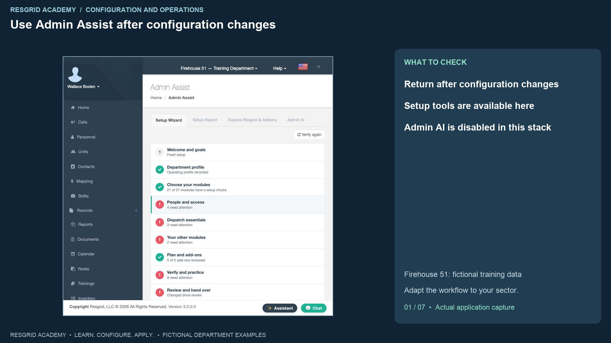
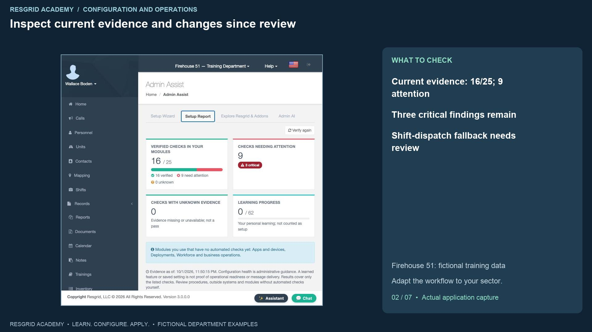
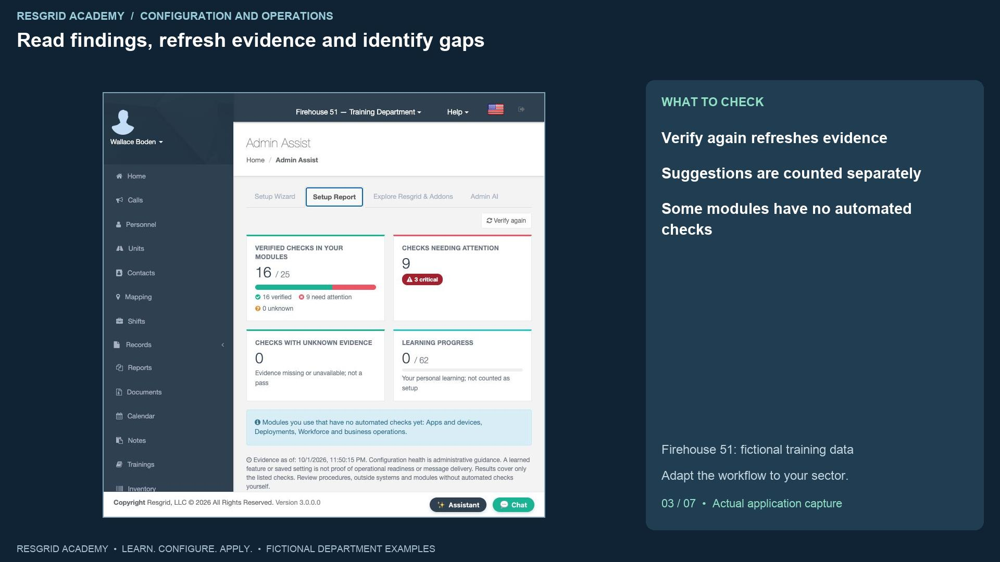
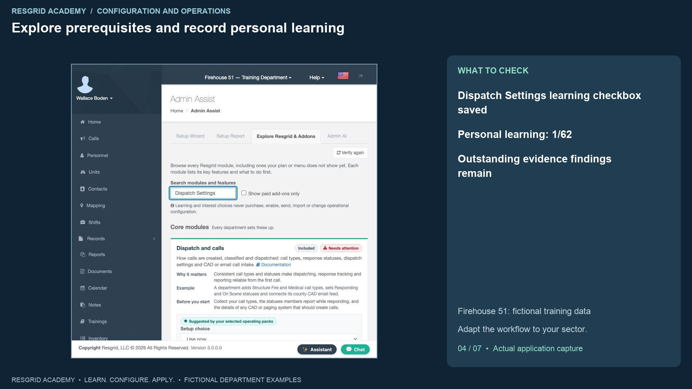
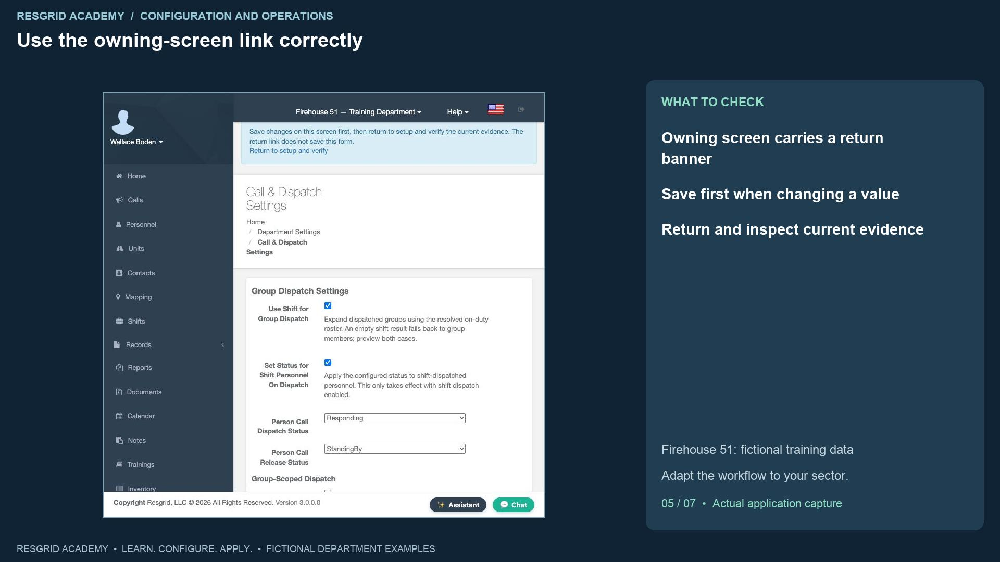
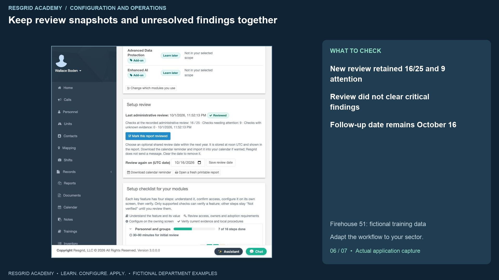
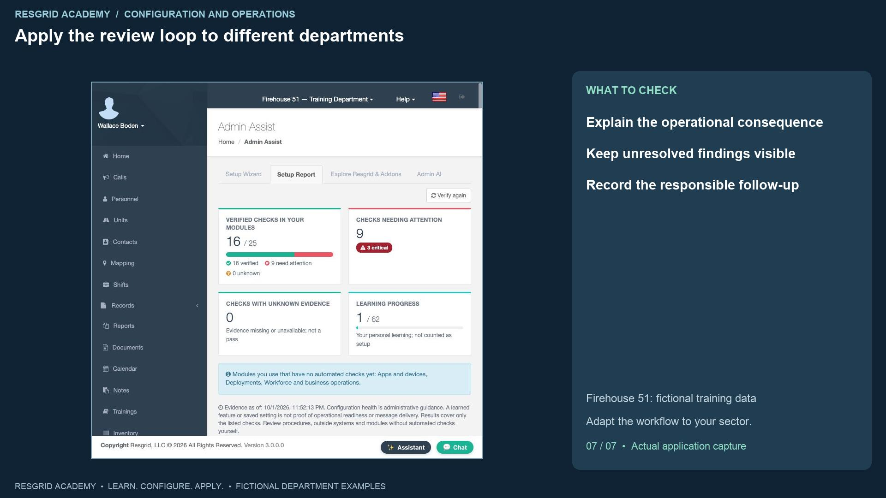

Configuration walkthrough
Use Admin Assist to review changes and follow up
Follow each step, understand its impact, and try the practice exercise with your department.
Step 1
Use Admin Assist after configuration changes

Read the transcript
Admin Assist helps an administrator connect setup decisions with the evidence the system can inspect. Open it from the department menu. The page has Setup Wizard, Setup Report, Explore Resgrid and Addons, and an Admin A I tab where that workspace is available. Our training stack has the setup tools, while Admin A I is disabled. We do not show an invented A I conversation. The nine-step wizard was covered earlier. In this lesson we return after changing department and dispatch settings, review the new findings, follow a link to the owning screen, and record a fresh review. Firehouse fifty-one provides fictional data. A mobile response service, search department, security company, wildland contractor or industrial emergency team can use the same administrative loop.
Step 2
Inspect current evidence and changes since review

Read the transcript
Choose Setup Report. Current evidence shows sixteen verified checks out of twenty-five, nine needing attention, three critical and zero unknown. The earlier recorded review remains fifteen out of twenty-three with eight needing attention. Changed since review means configuration, selected scope or the catalog has changed. Counts from different snapshots describe the checks in those snapshots; they are not a reliable department ranking. The new critical dispatch finding says Shift coverage needs review: an empty shift can cause group dispatch to fall back to every group member. This appeared after we enabled shift dispatch in the previous lesson. The setting is saved, but the coverage procedure still needs attention. For a security site, mobile response team or volunteer search group, that fallback can reach a wider audience than the administrator intended.
Step 3
Read findings, refresh evidence and identify gaps

Read the transcript
Verify again requests current evidence and refreshes the report time. It does not fix the findings. Review critical items first, then warnings and suggestions. Our report also shows administrator enrollment, recovery policy, notification preferences, communication verification, an empty group, overlapping shifts and expiring qualifications. Follow each item to its responsible configuration screen and decide what operational review is needed. Suggestions are listed separately and are not counted as failures. Zero unknown means no listed check is currently unknown; it does not mean every department feature has been tested. The report explicitly lists apps and devices, deployments, and workforce and business operations as modules with no automated checks yet. Those require their own review. A saved setup choice and a green module indicator cannot replace a device, provider or workflow test.
Step 4
Explore prerequisites and record personal learning

Read the transcript
Explore Resgrid and Addons lets an administrator search modules and features, including capabilities their menu or subscription may not show. Search for Dispatch Settings. The matching module explains why it matters, an example, prerequisites, key features, documentation and owning-screen links. Review the relevant feature before selecting I understand this feature. We select that checkbox for Dispatch Settings. Back on the report, personal learning is one out of sixty-two; verified checks remain sixteen out of twenty-five with nine needing attention. Learning progress records understanding by this user. It does not establish department setup, role eligibility, training competence or readiness. Use the paid-add-on filter to learn what requires separate access. Learning and interest choices do not purchase an add-on, activate an external provider, import data or send a message.
Step 5
Use the owning-screen link correctly

Read the transcript
From the Dispatch Settings feature, Open owning screen takes us to Call and Dispatch Settings with a return banner. The banner says to save changes on this screen first, then return and verify. The return link does not save this form. Here we inspect the already saved shift configuration, including its empty-roster fallback, without making another change. Return to setup and verify takes us back to Setup Report. For a search department, the next responsible review might inspect mobilization coverage. For mobile response, it might inspect the scheduled team; for security or industry, site coverage; for a contractor, an extended assignment roster. Use the evidence link to investigate the actual problem instead of changing several unrelated controls until the report appears better.
Step 6
Keep review snapshots and unresolved findings together

Read the transcript
After reviewing the listed findings, choose Mark this report reviewed. The new administrative snapshot records sixteen out of twenty-five, nine needing attention and zero unknown. The live report still contains the three critical findings. Reviewed records that an administrator reviewed the report; it does not clear findings or certify operational readiness. Our existing follow-up date is October sixteenth. A review date is stored as a U T C calendar date and shown with the report. The downloadable calendar reminder can be imported by the administrator; it is not an automatic department message. Open a fresh printable report when you need a current handover copy. Assign each unresolved issue to its responsible person using your department’s procedure, and keep the source evidence and agreed follow-up available to the next administrator.
Step 7
Apply the review loop to different departments

Read the transcript
For community paramedicine and mental health response, review team coverage, operational communications and credential follow-up with the service owner. For search and rescue, review volunteer mobilization, overlapping assignments, equipment and map freshness. For security companies, review site groups, patrol coverage and supervisor access. For wildland contractors, review seasonal rosters, expiring qualifications and extended deployments. For industrial emergency teams, review facility groups, equipment readiness and continuity procedures. The check has value when someone investigates its operational consequence. Your practice exercise is to make a single authorized change in a training department, refresh the report, explain any new finding, open its owning screen, verify what is saved, and record a review that preserves unresolved issues. Admin A I conversations, change plans, digests and other unavailable workspace paths need separate configuration and verification; this recording proves only the setup, exploration and review workflow shown.
Apply it to your department
- Community paramedicine and mental health response
- Use evidence checks to review roster, communications and upcoming credentials; investigate findings with the service owner.
- Search and rescue
- Review empty groups, qualifications and shift conflicts before the next search exercise.
- Security companies and departments
- Review patrol groups, administrative access and shift conflicts before expanding site coverage.
- Wildland contractors
- Review seasonal members, qualification expiry and deployment-related setup gaps before mobilization.
- Industrial emergency response teams
- Review facility groups, credentials and equipment-related setup findings; retain unresolved items in the handover.
Put it into practice
Check your department’s enabled modules, permissions and provider configuration. Save each change on its own screen, review the retained value, and confirm the result with the people and devices that will use it.